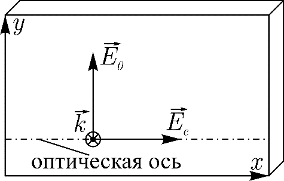
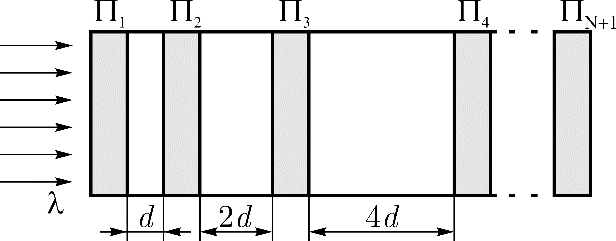
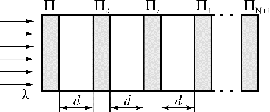

Y16 (2016) — English translation
Many substances have optical anisotropy, in which the refractive index depends on the direction of propagation and polarization of light. The direction in which light travels without birefringence is called the optical axis of the crystal.
Let there be a quartz plate cut parallel to the optical axis between two parallel-oriented polarizers (Fig. 1). The transmission plane of the polarizers makes an angle $45^{\circ}$ with the optical axis of the plate. The thickness of the plate is $d$. A plane monochromatic wave with wavelength $\lambda$ is incident on this system. After passing through the polarizer $1$, the light becomes linearly polarized, and its electric field strength vector oscillates only in the plane of transmission of the polarizer $1$. Next, this light falls on an anisotropic quartz plate. Two light waves are excited in the plate: $\vec{E}_o$, polarized perpendicular to the optical axis (called an ordinary wave), and $\vec{E}_e$, polarized along the optical axis (called an extraordinary wave). The refractive index of a quartz plate for an ordinary wave is $n_o$, and for an extraordinary wave it is $n_e$. Let's denote it by $\Delta{n}=n_o-n_e$. Rice. 1. Birefringence
Let there be a quartz plate cut parallel to the optical axis between two parallel-oriented polarizers (Fig. 1). The transmission plane of the polarizers makes an angle $45^{\circ}$ with the optical axis of the plate. The thickness of the plate is $d$. A plane monochromatic wave with wavelength $\lambda$ is incident on this system. After passing through the polarizer $1$, the light becomes linearly polarized, and its electric field strength vector oscillates only in the plane of transmission of the polarizer $1$. Next, this light falls on an anisotropic quartz plate. Two light waves are excited in the plate: $\vec{E}_o$, polarized perpendicular to the optical axis (called an ordinary wave), and $\vec{E}_e$, polarized along the optical axis (called an extraordinary wave). The refractive index of a quartz plate for an ordinary wave is $n_o$, and for an extraordinary wave it is $n_e$. Let's denote it by $\Delta{n}=n_o-n_e$.

Let the amplitude of the wave after passing through the first polarizer be equal to $A_0$. The amplitude of the light wave after the second polarizer is equal to the sum of the projections of the ordinary and extraordinary waves onto the direction of transmission of the second polarizer.
The Lyot interference polarization filter is an optical system consisting of $N+1$ polarizers and $N$ quartz plates (Fig. 2), cut parallel to the optical axis (the case discussed above). A plane monochromatic wave with wavelength $\lambda$ is incident on the filter. The main directions of all polarizers are parallel and make an angle $45^{\circ}$ with the optical axis of the plates. The thicknesses of the plates are $d$, $2d$, $4d$, $8d$, ... $2^{N-1}d$. The refractive indices of quartz are $n_o$ and $n_e$. Neglect the reflection of light at the boundaries of the plates and polarizers. Rice. 2. Lyo filter
The Lyot interference polarization filter is an optical system consisting of $N+1$ polarizers and $N$ quartz plates (Fig. 2), cut parallel to the optical axis (the case discussed above). A plane monochromatic wave with wavelength $\lambda$ is incident on the filter. The main directions of all polarizers are parallel and make an angle $45^{\circ}$ with the optical axis of the plates. The thicknesses of the plates are $d$, $2d$, $4d$, $8d$, ... $2^{N-1}d$. The refractive indices of quartz are $n_o$ and $n_e$. Neglect the reflection of light at the boundaries of the plates and polarizers.

Wood's monochromator consists of alternating $N+1$ polarizers and $N$ quartz plates of equal thickness $d$ (Fig. 3). The main directions of all polarizers are parallel and make an angle $45^{\circ}$ with the optical axis of the plates. The refractive indices of quartz are $n_o$ and $n_e$. Rice. 3. Wood's monochromator
Wood's monochromator consists of alternating $N+1$ polarizers and $N$ quartz plates of equal thickness $d$ (Fig. 3). The main directions of all polarizers are parallel and make an angle $45^{\circ}$ with the optical axis of the plates. The refractive indices of quartz are $n_o$ and $n_e$.

Source: https://pho.rs/p/3027